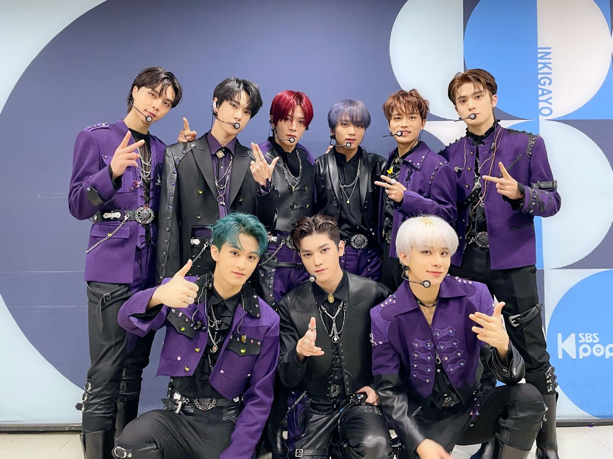
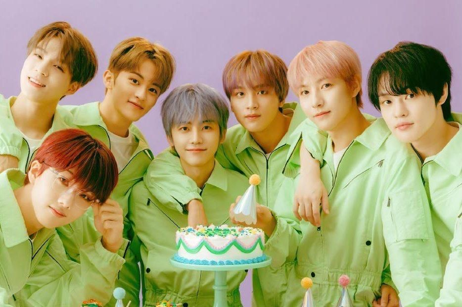
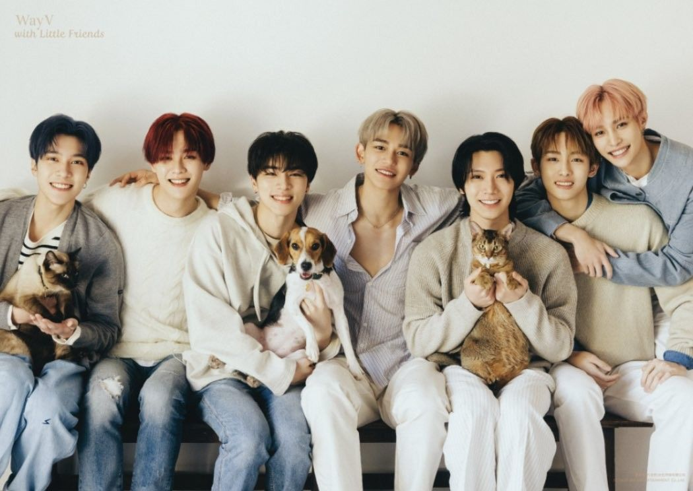
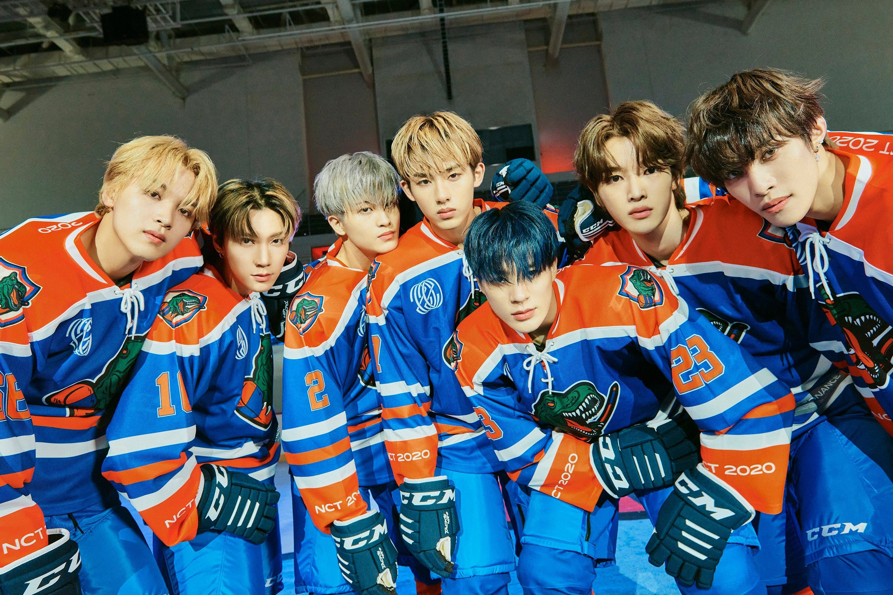
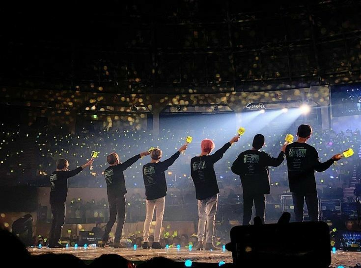

NCT adalah sebuah boy group asal Korea Selatan ,yang dibentuk oleh SM Entertainment. Grup boyband ini terbagi menjadi beberapa sub-unit yaitu, NCT U, NCT 127, NCT Dream, dan WayV. Sejak diumumkan pembentukannya pada tahun 2016, grup ini telah berkembang hingga mencapai total 23 anggota yang tergabung dalam empat sub-unit berbeda.

Sub Unit
NCT 127 adalah sub-unit kedua dari grup vokal pria Korea Selatan NCT yang dibentuk oleh SM Entertainment Nama unit mereka merupakan kombinasi dari akronim Neo Culture Technology dan angka "127" yang mewakili koordinat bujur kota Seoul. Debut pada 7 Juli 2016 dengan album mini NCT #127, anggota awal mereka terdiri dari 7 anggota: Taeil, Taeyong, Yuta, Jaehyun, Winwin, Mark, dan Haechan. Doyoung dan Johnny kemudian bergabung pada Desember 2016, menjelang perilisan album mini Limitless pada tahun 2017. Kemudian anggota terakhir Jungwoo diperkenalkan sebagai anggota baru pada September 2018, diikuti dengan album studio Regular-Irregular pada Oktober 2018.

NCT Dream adalah sub-unit ketiga dari boy band asal Korea Selatan NCT, yang khusus beranggotakan remaja dengan usia belasan tahun. Pada awalnya, sub-unit ini memiliki sistem kelulusan di mana anggota yang melampaui usia 20 akan keluar, tapi pada 2020, sistem ini diganti dan menjadikan NCT Dream sebagai unit tetap NCT. Unit ini melakukan debutnya pada 25 Agustus 2016 dengan lagu "Chewing Gum" dan tujuh orang anggota: Mark , Renjun, Jeno, Haechan, Jaemin, Chenle dan Jisung.

Way V adalah grup vokal pria asal Tiongkok yang merupakan sub-unit keempat dan unit yang berbasis di Tiongkok dari NCT dan dikelola oleh sub-label Tiongkok SM Entertainment, Label V.[1][2] Grup ini debut pada 17 January 2019, dengan album mini digital The Vision, dan terdiri dari tujuh anggota: Kun, Ten, Winwin, Lucas, Xiaojun, Hendery, dan Yangyang.

NCT U memulai debut pada 9 April 2016 dengan single digital The 7th Sense dan Without You. Unit kedua, NCT 127, yang berbasis di Seoul, memulai debut pada 7 Juli 2016 dengan mini album NCT #127. Unit ketiga, NCT Dream, memulai debut pada 25 Agustus 2016 dengan single digital Chewing Gum. Unit keempat, WayV, berbasis di Tiongkok, debut pada 17 Januari 2019 dengan album single The Vision.

Penghargaan
NCT 127
- Artist of the Year 2016 (Mnet Asian Music Award)
- Rookie of the Year 2017
- Penghargaan Artis Kosmopolitan 2021
NCT Dream
- Top Promising Group 2017
- Daesang Award 2017
- Worldwide Fan Choice Top 10 2021
Way V
- Favorite Asian Atist 2020
NCT U
- Favorite Male Group 2020 (Mnet Asian Music Award)
- New Star Award 2016
- Best Boy Band 2016

NCTzen adalah nama fansclub NCT yang merupakan gabungan dari 2 kata. 2 kata tersebut adalah NCT dan citizen yang artinya penduduk atau warga. Jika NCTzen adalah sebutan untuk fansclub NCT, Sijeuni merupakan panggilan sayang dari member NCT untuk para penggemar mereka. Sijeuni sendiri berasal dari kata season yang artinya musim. Sebab, bagi NCT fans mereka sangatlah berharga layaknya 4 musim. Sedangkan untuk Way V Pada tanggal 20 September, WayV secara resmi meluncurkan klub penggemar di bawah Lysn dan mengungkapkan nama fandom "WayZenNi".